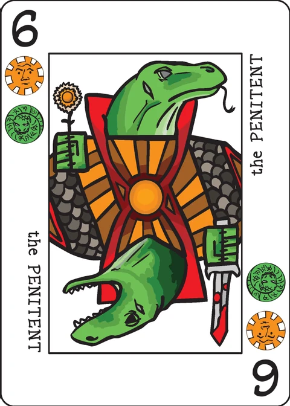

Terrapin
a family of betting games for 2–7 players; score points, avoid Turtle Butt
Terrapin is a family of betting games. All Terrapin games use the same basic rules for ranking possible hands. Western and Temptation Terrapin play well with up to 7 players; Provincial and Liar's play better with 4.
To play, you'll need to provide chips or a substitute - glass beads, pretzels, pennies, nickels, electrum pieces, or some other countable token. Don't bet serious money, and don't come crying to me if you lose your last glass bead playing Terrapin.
Scoring
A hand of cards is 'Turtle Butt' when it includes at least one instance of each of the six Decktet suits. Since the numbered cards have two suits each, it is possible to get Turtle Butt with as few as three cards. Turtle Butt is worth no points and nullifies any value that would otherwise have been in the cards. If you have a Turtle Butt and reveal your cards, you cannot possibly win the pot.
If you do not have Turtle Butt, then you score the total of any points for pairs, sets, or straights in your hand.
Each pair is worth five points. Additional Aces or Crowns are worth five points each. Note that three of a number rank (such as three 7s) will be Turtle Butt and so make the whole hand worthless.
You also score for the longest straight in your hand: a series of cards in rank order, with Aces being below 2 and Crowns above 9. A straight is worth two points for each card after the first; that is, the length of the straight minus one times two.
Example: A four card straight Ace-2-3-4 is worth 6 (=(4-1)*2).
Note that you may only score for the longest straight in your hand. Additional straights, even if they are of the same length, do no provide additional points.
Western Terrapin
Each player antes one chip into the pot. The dealer gives two cards face down to each player. There is then a betting round, starting with the player on the dealer's left.
Betting rounds work in the usual way: The first player bets or folds. After someone has bet, subsequent players either match the bet, raise, or fold. Bet and raise limits should be agreed upon by the group. (We play with a raise limit of 5 or 10 chips. You could play a no-limit tournament, if that's your thing.) The player who bet or raised most recently is called the 'last aggressive player.'
After the betting round, three cards are dealt face up in the middle of the table. If these three cards on their own make Turtle Butt, they are set aside and another three cards are dealt. Another betting round ensues, beginning with the last aggressive player.
Starting with the last aggressive player, each player has the choice to either take a card or stand. If a players takes a card, it is dealt face down. Continuing around the table, players who took a card may take a second, and so on. This continues until either every player has decided to stand or the deck is exhausted.
There is a final betting round, beginning with the last aggressive player.
If at any time during the hand all but one player has folded, then the remaining player wins and takes the pot.
If more than one player remains after the last betting round, there is a showdown. Remaining players reveal their hands, beginning with the last aggressive player. Your hand is formed by all of your cards along with the three shared cards. If your hand has all six Decktet suits in it, it cannot win. If it has five or fewer different suits, calculate the score as above. The highest scoring hand wins. (If someone has already shown cards that can beat your hand, you may opt to not show your cards when it comes around to you during the showdown.)
Note that a hand with Turtle Butt cannot win a showdown. If every player in the showdown has Turtle Butt, then the pot remains in play, players reante, and a new hand begins.
If multiple players in the showdown have the same highest score, they divide the pot as evenly as possible. Any remainder stays in the pot for the next hand.
Provincial Terrapin
Everybody antes one chip. Each player is dealt three cards face down. Two cards are dealt face up to the middle of the table. After looking at his hand and the shared cards, the dealer decides on a stake. The stake must be at least one chip and should be limited by common agreement. (A stake limit of three makes for a relatively conservative game. Five allows for runaway pots.) The dealer announces the stake.
Each player then secretly puts either zero, one, or two chips in their hand. These chips are used to indicate the play they intend to make. They hold out their clenched fist to indicate that they are ready, and players then simultaneously reveal their chips. Zero chips in your hand, an empty fist, means that you fold. One chip, you pay to play. Two chips, you call.
Folding (zero chips) Set down your hand. You are out for the round. If everyone folds, then the hand ends without a winner; the pot remains in play, players reante, and a new hand begins.
Paying to play (one chip) Every player who paid to play must put a number of chips in the pot equal to the stake. Beginning on the dealer's left and proceeding clockwise around the table, players who paid to play must either discard or draw one card. (You must do one or the other if you've signalled one chip, but you may not do both.)
If you discard, choose one card from your hand and put it face up on the table. Start a discard pile if there is not one already; otherwise, put the card on the top of the discard pile.
If you draw, you may either take the top card of the discard pile (if there is one) or the top card from the deck.
Calling (two chips) Every player who calls must pay twice the stake to the pot.
If any player calls, then there is a showdown. Note that players who signal one chip (pay to play) must draw or discard before the showdown. The showdown begins with the player who called. If multiple players called, it starts with the one closest to the dealer's left.
In the showdown, your hand is your private cards plus the two shared cards. The highest scoring Turtle-Butt-free hand takes the pot.
If nobody called, repeat the process. And again as long as people are just paying to play. The hand continues until either someone calls, only one player remains, or everyone folds.
Here are some assorted points about strategy in Provincial:
- You may not simply pass or abort your action. If you pay to play, you must either discard or draw. If you call, then you may not draw or discard before the showdown.
- After the dealer declares the stake, it is fixed for that hand. The only way to fatten the pot is to lure other players into playing longer. As you do, you'll have to be adding or shedding cards from your hand.
- If the stake is low, then there are pressures to make the hand go on. Players with weak hands can afford to draw several times as they build up their hands. Players with strong hands may want to let things go a while so as to build up the pot.
- If the stake is high, then there are pressures to either fold or call quickly.
- Sometimes you should discard something that is actually good for your hand. For example, suppose your hand is 3,4,5,9,9 with five of the six suits. This is 9 points as it stands (5 for the pair, 4 for the straight). You pay to play, so as to fatten the pot, but another player calls. Before the showdown, you must either draw or discard. If you draw, you might get the sixth suit; that would give you Turtle Butt and kill your hand. So you should discard the 3 or the 5. You'll still have a 7 points at the showdown (two less, since the straight is shorter).
Temptation Terrapin
Each player antes three chips into the pot. The dealer gives two cards face down to each player and deals three cards face up in the middle of the table. If these three cards on their own make Turtle Butt, they are set aside and another three cards are dealt. Players may look at their face down cards.
Starting on the dealer's left and going clockwise around the table, each player has the opportunity to take another face down card. To do so, they must pay one additional chip into the pot.
After the dealer has decided whether or not to take a card: Starting on the dealer's left and going clockwise around the table, each player has the choice of taking another face down card. This time it requires paying two chips to the pot.
This repeats, with the next card costing three chips and so on - each additional card costing one more chip than the previous one. It ends either when no players want additional cards or the deck runs out of cards.
A showdown ensues. Your hand is all your private cards plus the three shared cards. The highest scoring Turtle-Butt-free hand takes the pot.
If everyone has Turtle Butt, then no one wins the pot. All chips remain in the pot for the next hand. Players ante again, the player on the dealer's left becomes the dealer, and a new hand is dealt.
Liar's Terrapin
Each player antes a number of chips equal to half the number of players, rounded up.
There is only one hand of cards, and only one player can see it at a time. You need to bluff the next player into either taking the hand or challenging you when the hand really has points in it. If you're challenged when the hand goes Turtle Butt, you're out.
The first player draws a hand of three cards, looks at them, and then may draw additional cards. Further cards are drawn one at a time, and the player may look at each one before deciding to draw another. When done drawing, the first player announces a score of one or more. The next player must either challenge the announcement or accept it.
If the next player challenges, then the first player shows the entire hand. If the cards score as many points as the player announced and are not Turtle Butt, then the second player (the challenger) is out of the game. If the cards are Turtle Butt or score fewer points than were claimed, the first player (the one challenged) is out of the game. After a challenge, the deck is shuffled and the next player a new hand. The next player will be the challenger (if the challenge went well for them) or the next player after that (if it did not).
If the second player accepts, then the first player gives the hand to the second player. After looking at the hand, they may discard any number of cards. After discarding, they may draw cards. When done drawing, they must announce a score greater than the score claimed for the hand by the previous player.
The next player then either challenges or accepts this announcement. Every time a player goes out, each remaining player takes one chip from the pot. Play continues until only one player remains. The final player takes all the chips remaining at the end.
Note on this implementation
Two players, one device: this app implements the family for exactly two players, passing the device between turns; each player's hand is hidden behind a "Player N's turn" screen.
Variants: Western Terrapin (the default) and Temptation Terrapin are implemented, and you can switch between them from the table. Provincial and Liar's Terrapin are not implemented: the wiki itself says they "play better with 4", Provincial rests on simultaneous secret fistfuls of chips, and Liar's is a bluffing elimination game that barely functions at two. Their rules are copied above for reading.
Chips (an app default): the wiki says only "provide chips", so this app starts each player with 50 chips.
Bet and raise limits (an app default): the wiki leaves limits "to be agreed upon by the group" and mentions playing "with a raise limit of 5 or 10 chips". This app uses a limit of 5 chips per bet and per raise. You may never put in more chips than you hold, and if you cannot match a bet you must fold.
No check: the wiki says the first player in a betting round "bets or folds", so there is no check-call — every betting round starts with a bet, in all three rounds.
Length of the match: Terrapin is "open ended" in the wiki. This app ends the match when a player reaches 65 chips, when a player is broke, or after 12 hands (then the chip leader wins; equal stacks are a draw). A split pot keeps its remainder, and an all-Turtle-Butt showdown keeps the whole pot, for the next hand.
The set-aside triple: three face-up cards that on their own make Turtle Butt are set aside and replaced, as the wiki says. (In the astronomically unlikely event the deck runs out while replacing, the set-aside cards are shuffled back — the wiki has no rule for it.)
Take or stand: offers go around the table in laps starting with the last aggressive player; a player who took a card is offered another on the next lap, as the wiki words it. In the two-player game the offer simply alternates until both stand or the deck runs out.
Hand ranking: pairs are 5 points each, additional Aces or Crowns 5 each (so n of a kind is 5×(n−1)), and the longest straight 2 per card after the first with Aces low, Crowns high and no wrapping. This is exactly the ranking Soliterrapin uses in this app, and the two share test coverage.
Credits
Design: P.D. Magnus
Playtesting: Joe Levy, Cristyn Magnus, Pete Murray, Jason Mutford, Karen Traite
Provincial Terrapin was inspired by S John Ross' Face of Emoch. Temptation Terrapin was inspired by Sid Sackson's Temptation Poker.
These rules are copied from the Terrapin page of the Decktet wiki (page revision 23, 7 July 2017) so they can be read offline, under the wiki's CC BY-NC-SA 3.0 licence. Cards by P.D. Magnus, same licence.
Further reading: Terrapin at BGG